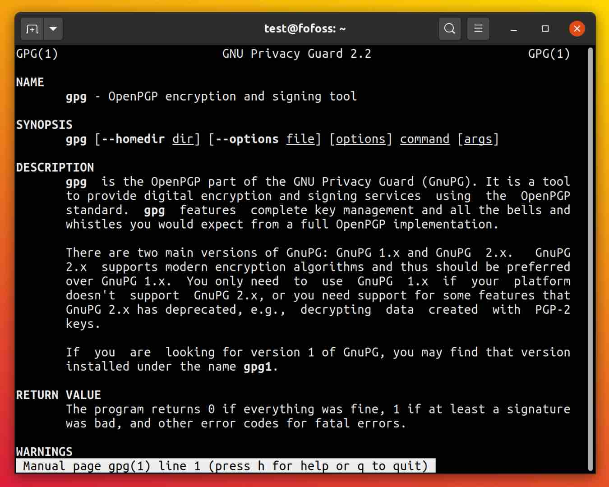
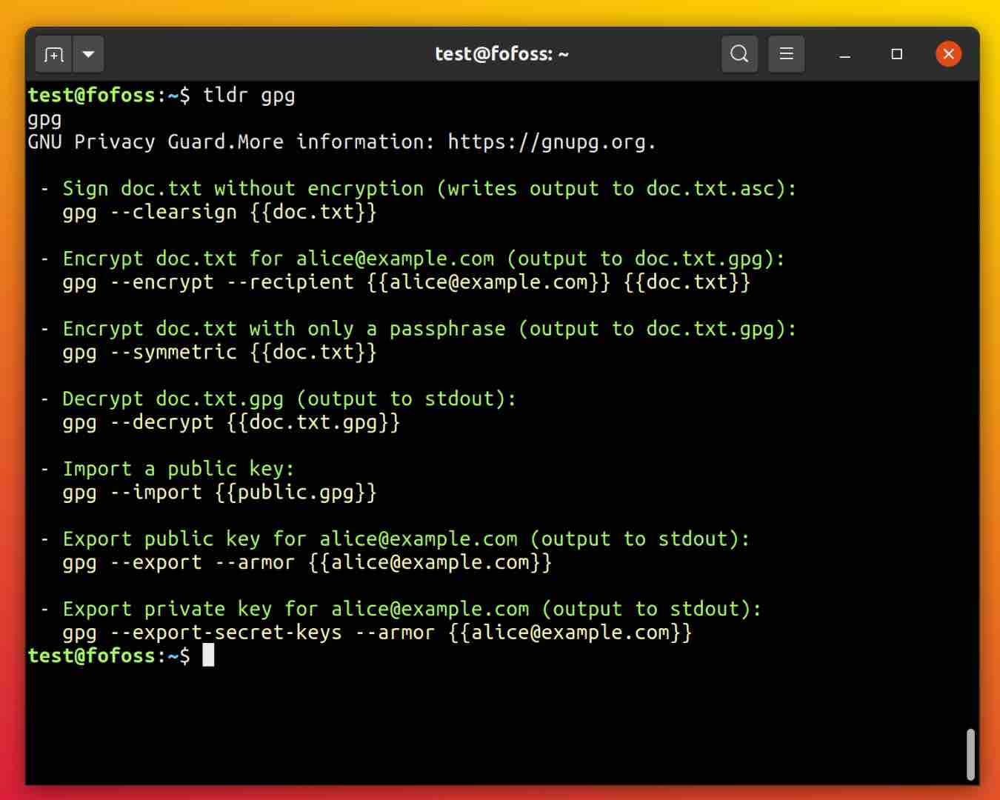
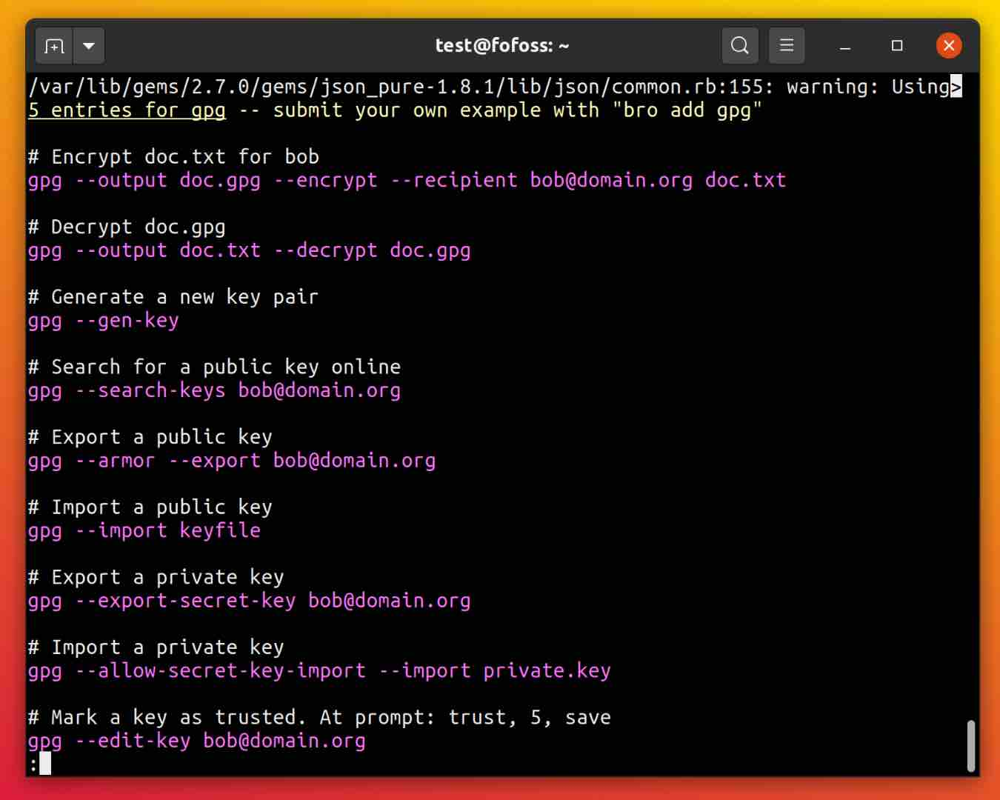
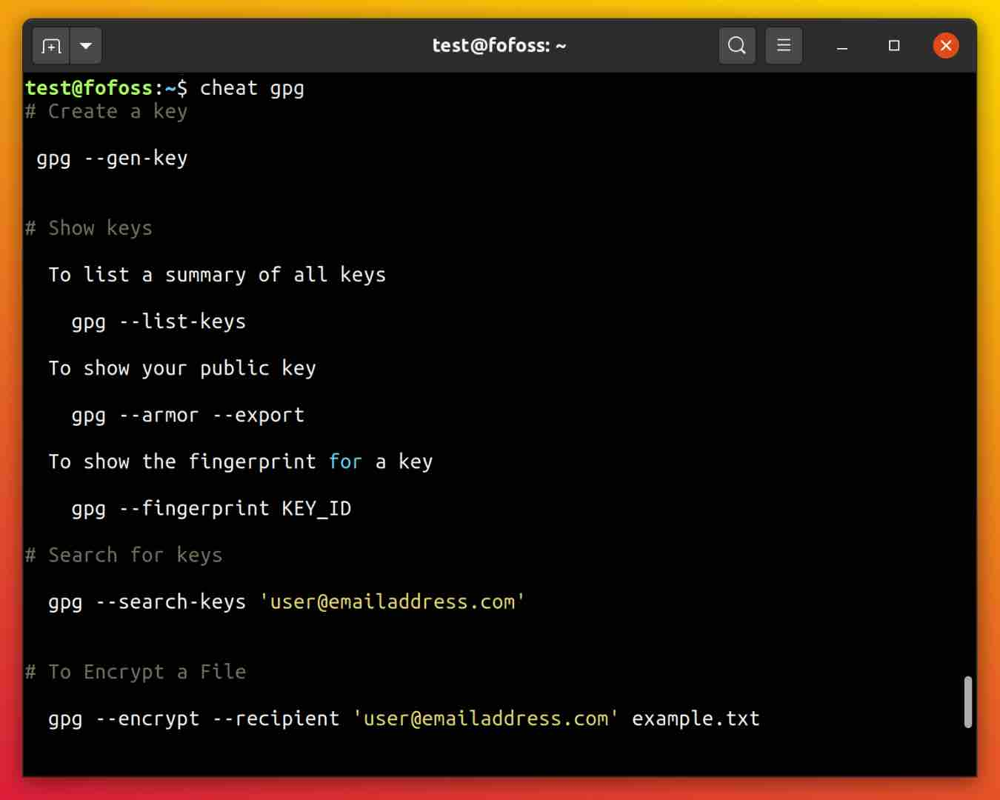
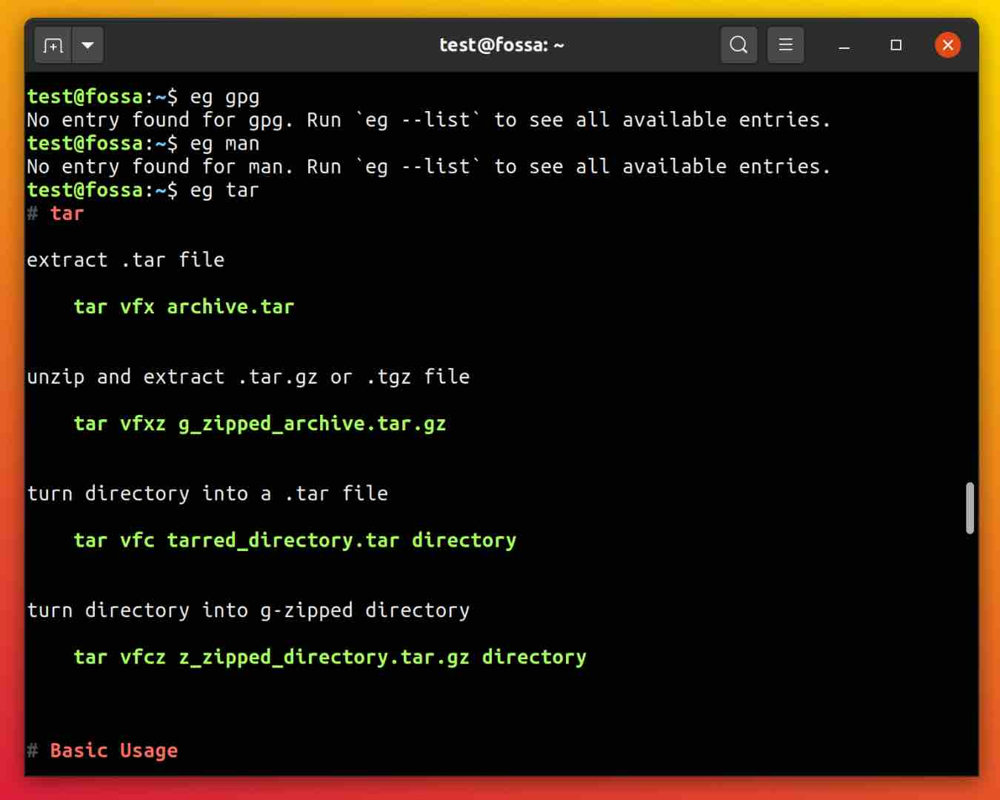
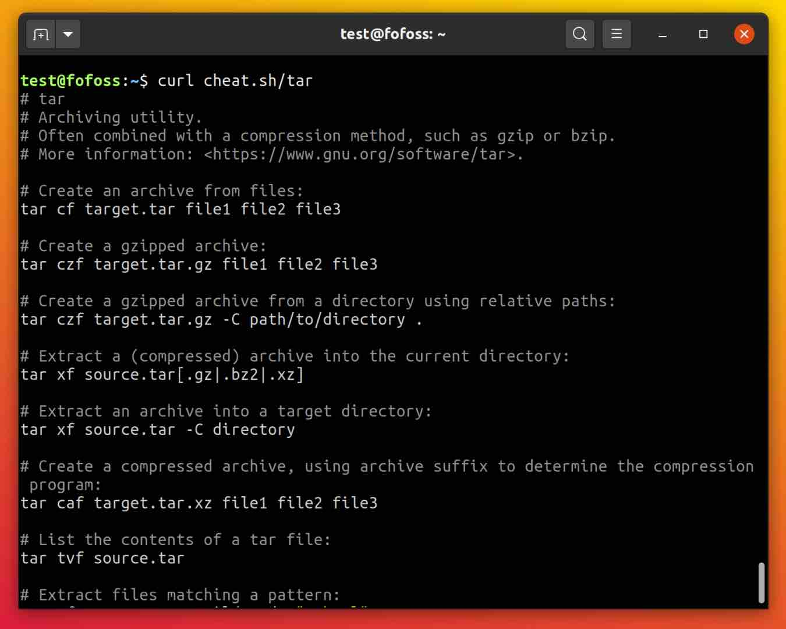

One small step for man
‘Read the manual’—timeless and sage advice. But what about a summary? Can one hundred words be more useful than twenty thousand? Enough developers think so to write several alternatives to the classic Unix man and GNU info systems. A quick test lookup of documentation for gpg brought surprising results:
| man |
C |
1971 |
81.53 |
21884 |
| info |
C, Perl |
1986 |
70.86 |
57676 |
| tldr |
Multiple |
2013 |
8.31 |
103 |
| bro |
Ruby |
2014 |
351.17 |
308 |
| cheat |
Go |
2014 |
99.92 |
525 |
| eg |
Python |
2015 |
103.64 |
357 |
| cheat.sh |
Python |
2017 |
141.84 |
91 |
So this was a blowout, with tldr running away with performance. Even though the ‘official’ client is written in JavaScript, there are Ruby, Haskell, Perl, Python, C++, Rust, Bash, and Go clients available. I had no idea that my package manager had installed the C++ client by default. There’s also a web application, Dash integration, and an iOS app available. The silver medal goes to the cheat.sh service which requires only internet access: a very interesting approach that will no doubt be useful wherever applications cannot be installed. bro kept throwing weird warnings and eg did not have gpg in it’s knowledge base, so I would not recommend them. cheat offers users an easy way to add their own content in custom ‘cheat-sheets’, with the ‘community’ cheat-sheet being little more than a default source. Honestly, I never really use info pages. Interestingly, colorless and ancient man still has the best formatting of them all:
man
tldr
bro
cheat
eg
cheat-sh